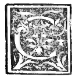

CAPITOLO XI¶
De lorigine dele letere de ogni natione.

Comme desopra me ricordo hauerue dicto. In questo asuo principio me parso ponere lalphabeto antico. Solo per demostrare a cadauno che senza altri instrumenti con la linea recta e curua non che quello ma tutto apresso cadauna natione: o sia ebrea greca caldea o latina comme più volte me fo retrouato a dire e con effecto a prouarne benché a me loro Idiomi non sieno noti. Peroche in ognuno potria esser venduto e datomi a bere del mercato che noi sapria comme qui in Vinegia acerto barbaresco vn di in su la piaza de San marco presenti forsi 5o degni gentilomini.
Ma non mutando el greco le figure geometriche, cioè che non facesse el quadro con 5 cantoni me oseriei in tutto e per tutto li lor passi in Euclide nostro chiaritome da loro, quid nominis et quid rei promisi darlile Jo. e più non so. e romase el frate comme sempre in questa inclita cita cadauno mi chiama e atesia stampar miei libri al cui fine qui capitai con licentia e apogie de) mio Reverendissimo Gardinale San Piero in vincula vice cancehero de Sancta madre chiesa e nepote dela Sanctita de nostro signore Papa Julio II. qual me manco troppo presto, e men dico de quello che mera chiesto e de tutto Idio laudato etc.
Dico a voi dicto alphabeto molto douer esser proficuo per lopere in scultura nele quali molto se costuma porne. O per epitaphy o altri dicti secondo che vi fosse ordinato. E certamente rendano grandissima venusta in ogni opera come neli archi triumphali e altri excelsi hedificii in Roma e altronde apare, delequali lettere e cosi de cadaunaltra dico loro inuentione esser stata alibito comme nelli obilischi in Roma e altre machine apare a San marco e in la sepultura porfiria nanze ala rotonda guardata dali doi Lioni.
Doue penne coltelli animali sola de scarpe vcelli boccali per lor letere a quel tempo e cifre se vsauano. Onde poi più oltra speculando li ho mini se sonno fermati in queste che al presente vsiamo. Peroche li hano trouato el debito modo con lo circino in curua e libella recta debitamente saperle fare. E se forse qualcuna con la mano non responda debitamente alo scripto e regola de lor formarione non dimeno voi sequendo dicti canoni sempre le farete con gratia summa e piaceri deli meniatori e altri scriptori sequendo la regola de lor dati a vna per vna etc.